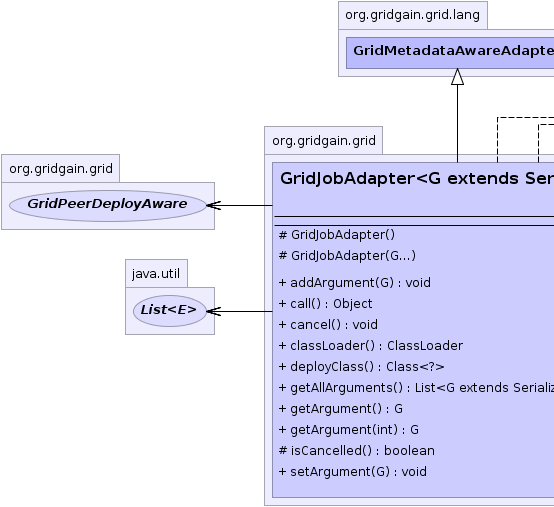
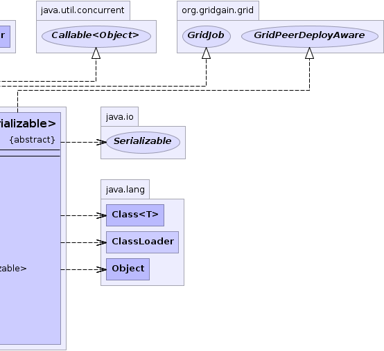

org.gridgain.grid.lang.GridMetadataAwareAdapter
org.gridgain.grid.GridJobAdapter<G>
org.gridgain.grid.lang.GridMetadataAwareAdapter
org.gridgain.grid.GridJobAdapter<G>
|
GridGain™ 3.1.1c
Community Edition |
|||||||||
| PREV CLASS NEXT CLASS | FRAMES NO FRAMES | |||||||||
| SUMMARY: NESTED | FIELD | CONSTR | METHOD | DETAIL: FIELD | CONSTR | METHOD | |||||||||
java.lang.Object
@Deprecated public abstract class GridJobAdapter<G extends Serializable>
This class is deprecated in favor of GridJobAdapterEx class.
Convenience adapter for GridJob implementations. It provides the
following functionality:
GridJob.cancel() method and ability
to check whether cancellation occurred.
GridJobAdapter.setArgument(Serializable)
and GridJobAdapter.getArgument() methods.
GridJobAdapter can be used from task logic
to create jobs. The example creates job adapter as anonymous class, but you
are free to create a separate class for it.
public class TestGridTask extends GridTaskSplitAdapter<String, Integer> {
// Used to imitate some logic for the
// sake of this example
private int multiplier = 3;
@Override
protected Collection<? extends GridJob> split(int gridSize, final String arg) throws GridException {
List<GridJobAdapter<String>> jobs = new ArrayList<GridJobAdapter<String>>(gridSize);
for (int i = 0; i < gridSize; i++) {
jobs.add(new GridJobAdapter() {
// Job execution logic.
public Object execute() throws GridException {
return multiplier * arg.length();
}
});
}
return jobs;
}
// Aggregate multiple job results into
// one task result.
public Integer reduce(List<GridJobResult> results) throws GridException {
int sum = 0;
// For the sake of this example, let's sum all results.
for (GridJobResult res : results) {
sum += (Integer)res.getData();
}
return sum;
}
}
| Wiki | |
| Forum |
|  |  |
| Constructor Summary | |
|---|---|
protected |
GridJobAdapter()
Deprecated. No-arg constructor. |
protected |
GridJobAdapter(G... args)
Deprecated. Creates job with specified arguments. |
| Method Summary | |
|---|---|
void |
addArgument(G arg)
Deprecated. Adds an optional job argument. |
Object |
call()
Deprecated. |
void |
cancel()
Deprecated. This method is called when when system detects that completion of this job can no longer alter the overall outcome (for example, when parent task has already reduced the results). |
ClassLoader |
classLoader()
Deprecated. Gets class loader for the class. |
Class<?> |
deployClass()
Deprecated. Gets top level user class being deployed. |
List<G> |
getAllArguments()
Deprecated. Gets ordered list of all job arguments set so far. |
G |
getArgument()
Deprecated. Gets job argument at position 0 or null if no argument was previously set. |
G |
getArgument(int pos)
Deprecated. Gets argument at specified position. |
protected boolean |
isCancelled()
Deprecated. This method tests whether or not this job was cancelled. |
void |
setArgument(G arg)
Deprecated. Sets an optional job argument at position 0. |
| Methods inherited from class org.gridgain.grid.lang.GridMetadataAwareAdapter |
|---|
addMeta, addMetaIfAbsent, addMetaIfAbsent, allMeta, clone, copyMeta, copyMeta, hasMeta, hasMeta, meta, putMetaIfAbsent, putMetaIfAbsent, readExternalMeta, removeMeta, removeMeta, replaceMeta, writeExternalMeta |
| Methods inherited from class java.lang.Object |
|---|
equals, finalize, getClass, hashCode, notify, notifyAll, toString, wait, wait, wait |
| Methods inherited from interface org.gridgain.grid.GridJob |
|---|
execute |
| Constructor Detail |
|---|
protected GridJobAdapter()
Note: the job argument will be null which usually is not the intended behavior.
You can use GridJobAdapter.setArgument(Serializable) to set job argument.
protected GridJobAdapter(G... args)
args - Job arguments.| Method Detail |
|---|
public Class<?> deployClass()
deployClass in interface GridPeerDeployAwarepublic ClassLoader classLoader()
GridPeerDeployAware.deployClass() as well as all of its
dependencies.
Note that in most cases the class loader returned from this method
and the class loader for the class returned from GridPeerDeployAware.deployClass() method
will be the same. If they are not the same, it is required that the class loader
returned from this method still has to be able to load the deploy class and all its
dependencies.
classLoader in interface GridPeerDeployAwarepublic void cancel()
GridFuture.cancel() is called.
Note that job cancellation is only a hint, and just like with
Thread.interrupt() method, it is really up to the actual job
instance to gracefully finish execution and exit.
cancel in interface GridJobprotected final boolean isCancelled()
This method can be periodically called in GridJob.execute() method
implementation to check whether or not this job cancelled. Note that system
calls GridJobAdapter.cancel() method only as a hint and this is a responsibility of
the implementation of the job to properly cancel its execution.
true if this job was cancelled, false otherwise.public void setArgument(G arg)
arg - Executable argument.public void addArgument(G arg)
arg - Job argument.@Nullable public G getArgument()
public G getArgument(int pos)
pos - Position of the argument.
public List<G> getAllArguments()
@Nullable
public final Object call()
throws Exception
call in interface Callable<Object>Exception
|
GridGain™ 3.1.1c
Community Edition |
|||||||||
| PREV CLASS NEXT CLASS | FRAMES NO FRAMES | |||||||||
| SUMMARY: NESTED | FIELD | CONSTR | METHOD | DETAIL: FIELD | CONSTR | METHOD | |||||||||
|
GridGain = High Performance Cloud Computing
|
|

|
|